Sinus Bradycardia
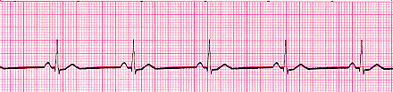
- Rate < 60
Sinus Tachycardia
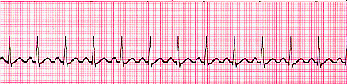
- Rate > 100
Atrial Fibrillation
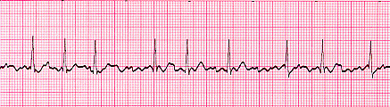
- Multiple atrial foci rapidly discharging produce a jagged baseline of tiny spikes. Ventricular (QRS) response is irregular.
Atrial Flutter
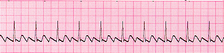
- A continuous (“saw tooth”) rapid sequence of atrial complexes from a single rapid-firing atrial focus. Many flutter waves needed to produce a ventricular response.
Ventricular Fibrillation
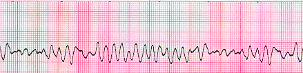
- Multiple ventricular foci rapidly discharging produce a totally erratic ventricular rhythm without identifiable waves.
Ventricular Tachycardia
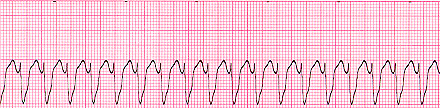
- Ventricular focus produces a rapid (150-250/min.) sequence of (PVC-like) wide ventricular complexes
SVT
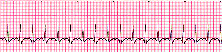
First Degree Heart Block
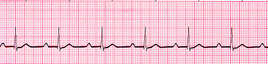
- Prolonged PR interval. PR interval is prolonged to greater than .2 sec (one large square).
Second Degree Heart Block Type I
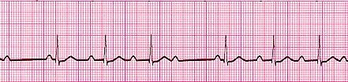
- PR gradually lengthens with each series does not produce a QRS.
Second Degree Heart Block Type II
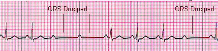
- Some P waves don’t produce a QRS response. If “intermittent,” an occasional QRS is droped.
Third Degree Heart Block
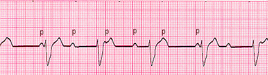
- Patient with complaint of abdominal pain, discomfort or cramping